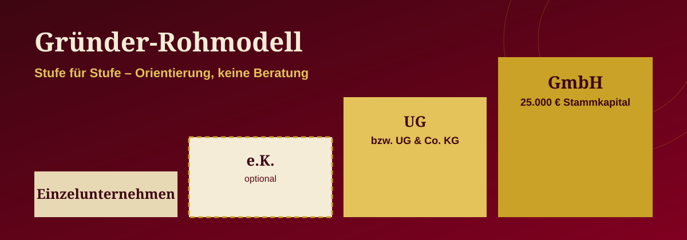
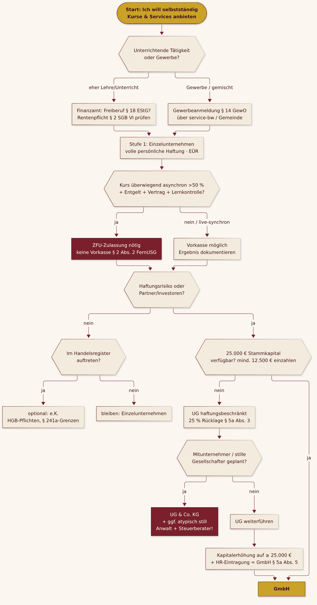

Blog · Leitfaden · Stand 09.10.2026 · ca. 23 Min. Lesezeit
Gründer-Rohmodell
Vom Kleingewerbe über die UG & Co. KG zur GmbH – ein wiederverwendbarer Leitfaden für Gründer:innen, die von der Bürokratie genervt sind.

PDF herunterladen Checkliste /DREAM · EXECUTOR
Orientierung, keine Beratung Alle Ergebnisse der Rechner sind Orientierung, keine Rechts- oder Steuerberatung.
0. Wie du diesen Leitfaden benutzt
- Rohmodell = Vorlage. Kopiere die Datei, ersetze die Platzhalter („…“-Felder in Abschnitt 7) durch deine Daten und hake die Checklisten ab.
- Jeder Schritt hat eine offizielle Quelle. Wenn du unsicher bist: Link öffnen, Stand prüfen, Beratung fragen.
- Ermutigung vorweg: Bürokratie wirkt riesig, ist aber eine Folge kleiner, machbarer Schritte. Niemand muss am ersten Tag eine GmbH gründen.
Das anonymisierte Praxisbeispiel
Eine Solo-Gründerin aus der Region Neckar-Alb (Name, Adresse und Registernummern bewusst weggelassen) bietet Online-Kurse und Beratungs-Services an – lokal und für Kund:innen weltweit. Ihr Weg:
- Start als Einzelunternehmen („Kleingewerbe") mit Gewerbeanmeldung (§ 14 GewO; die Gemeinde bestätigt den Empfang nach § 15 GewO). Volle persönliche Haftung, Gewinnermittlung per vereinfachter Einnahmen-Überschuss-Rechnung (EÜR) statt Bilanz.
- Geplante nächste Stufe: eine „UG (haftungsbeschränkt) & Co. KG (i.Gr.)" als Holding-/Dachstruktur, an der sich Unterstützer:innen als atypisch stille Gesellschafter beteiligen sollen.
- Später: Übergang zur GmbH.
- Beratung: über öffentlich geförderte Programme – ein Gründungscoaching im Umfeld der Landesförderung (L-Bank/Land BW) und eine Innovationsberatung durch ein Steinbeis-Transferunternehmen.
- Zahlungen: bevorzugt Vorkasse.
Dieser Leitfaden zeigt, was an diesem Weg gut funktioniert – und wo die Fallstricke liegen (siehe die Kästen „⚠️ Prüfpunkt").
1. Das Stufenmodell
Stufe 1 Stufe 1b (optional) Stufe 2 Stufe 3
Einzelunternehmen → e.K. (eingetragener → UG (haftungsbeschr.) → GmbH
"Kleingewerbe" Kaufmann) bzw. UG & Co. KG
1.1 Überblick in einer Tabelle
| Einzelunternehmen / Kleingewerbe | e.K. | UG (haftungsbeschränkt) | UG & Co. KG | GmbH | |
|---|---|---|---|---|---|
| Haftung | unbeschränkt, mit Privatvermögen | unbeschränkt, mit Privatvermögen | auf Gesellschaftsvermögen beschränkt (Ausnahmen z. B. bei Pflichtverletzung der Geschäftsführung) | Komplementär-UG haftet unbeschränkt, aber selbst nur mit ihrem Vermögen; Kommanditisten bis zur Einlage | auf Gesellschaftsvermögen beschränkt |
| Gründung | Gewerbeanmeldung bzw. Anzeige beim Finanzamt (Fragebogen zur steuerlichen Erfassung) | zusätzlich Eintragung ins Handelsregister über Notar | Notar (Musterprotokoll möglich, auch Online-Beurkundung per Video), Handelsregister, Transparenzregister | zwei Gesellschaften: UG gründen + KG-Vertrag + HR-Eintragung der KG | Notar, Handelsregister, Transparenzregister |
| Mindestkapital | keins | keins | ab 1 €, voll bar einzuzahlen, keine Sacheinlagen (§ 5a Abs. 2 GmbHG) | Kapital der UG + Kommanditeinlagen | 25.000 € Stammkapital, mind. 12.500 € bei Anmeldung eingezahlt (§ 5, § 7 Abs. 2 GmbHG) |
| Buchführung | EÜR (§ 4 Abs. 3 EStG), solange keine Buchführungspflicht | HGB-Buchführung, befreit bis 800.000 € Umsatz / 80.000 € Jahresüberschuss (§ 241a HGB) | immer doppelte Buchführung + Bilanz (Kapitalgesellschaft) | immer doppelte Buchführung + Bilanz (Handelsgesellschaft; § 241a gilt nur für Einzelkaufleute) | immer doppelte Buchführung + Bilanz |
| Besonderheit | einfachster Start | Firmenname frei wählbar mit Zusatz „e.K." | Pflicht-Rücklage 25 % des Jahresüberschusses | komplexe Struktur – nur mit Beratung | Seriosität, Kapitalnachweis |
1.2 Stufe 1 – Einzelunternehmen („Kleingewerbe")
Was es ist: „Kleingewerbe" ist keine eigene Rechtsform, sondern umgangssprachlich ein Einzelunternehmen, das (noch) kein kaufmännisches Gewerbe im Sinne des § 1 Abs. 2 HGB betreibt – also nicht im Handelsregister steht.
Schritte: 1. Gewerbeanmeldung bei der Gemeinde, in BW meist online über das Serviceportal service-bw („Gewerbe anmelden"). Rechtsgrundlage: § 14 GewO, Empfangsbescheinigung: § 15 GewO. 2. Fragebogen zur steuerlichen Erfassung über ELSTER beim Finanzamt einreichen (Steuernummer, ggf. Kleinunternehmerregelung wählen). 3. Geschäftskonto (empfohlen, trennt Privat und Geschäft).
Haftung: voll und persönlich – auch mit Ersparnissen, Auto, Wohnung.
Buchführung: EÜR nach § 4 Abs. 3 EStG – Einnahmen minus Ausgaben, kein Jahresabschluss. Die steuerliche Buchführungspflicht nach § 141 AO greift für Gewerbetreibende erst oberhalb von 800.000 € Umsatz oder 80.000 € Gewinn im Jahr (und nach Aufforderung durch das Finanzamt).
Umsatzsteuer – Kleinunternehmerregelung (§ 19 UStG, Stand 2026):
- Umsatz im Vorjahr ≤ 25.000 € und im laufenden Jahr ≤ 100.000 € → keine Umsatzsteuer auf Rechnungen.
- Wird im laufenden Jahr die 100.000-€-Grenze überschritten, ist bereits der Umsatz, mit dem die Grenze überschritten wird, steuerpflichtig (harte Grenze).
- Im Gründungsjahr gilt laut BMF nur die 25.000-€-Grenze (siehe BMF-Schreiben vom 18.03.2025).
- Nachteil: kein Vorsteuerabzug. Bei vielen internationalen B2C-Kund:innen (digitale Leistungen, OSS) Steuerberatung einschalten.
ESTIMATOR b) · Simulator
Kleinunternehmerregelung (§ 19 UStG, Stand 2026)
Prüft die Umsatzgrenzen aus Abschnitt 1.2.
Formel: Vorjahr ≤ 25.000 € und laufendes Jahr ≤ 100.000 €; im Gründungsjahr nur ≤ 25.000 € (BMF, 18.03.2025).
Gründungsjahr mit 30.000 € → über 25.000 €, Regelung rechnerisch nicht möglich. Vorbelegt: 18.000 € / 60.000 € → möglich.
1.3 Stufe 1b (optional) – eingetragener Kaufmann (e.K.)
- Freiwillige Eintragung ins Handelsregister ist für Kleingewerbetreibende möglich (§ 2 HGB); Pflicht wird sie, wenn der Betrieb „nach Art oder Umfang einen in kaufmännischer Weise eingerichteten Geschäftsbetrieb erfordert" (§ 1 Abs. 2 HGB).
- Vorteil: frei wählbarer Firmenname, mehr Außenwirkung. Nachteil: HGB-Pflichten, Haftung bleibt unbeschränkt.
- Buchführung: befreit, solange an zwei aufeinanderfolgenden Abschlussstichtagen ≤ 800.000 € Umsatzerlöse und ≤ 80.000 € Jahresüberschuss (§ 241a HGB; Neugründung: schon am ersten Stichtag).
- Für das Praxisbeispiel eher überspringbar: Wer Haftung begrenzen will, geht direkt zur UG/GmbH.
1.4 Stufe 2 – UG (haftungsbeschränkt) und UG & Co. KG
UG (haftungsbeschränkt) – die „Mini-GmbH" (§ 5a GmbHG): - Stammkapital ab 1 €, aber vollständig in bar vor der Anmeldung einzuzahlen; Sacheinlagen verboten (§ 5a Abs. 2). - Thesaurierungspflicht: Jedes Jahr muss ein Viertel (25 %) des Jahresüberschusses (gemindert um einen Verlustvortrag) in eine gesetzliche Rücklage (§ 5a Abs. 3). Diese Rücklage darf nur für eine Kapitalerhöhung aus Gesellschaftsmitteln oder zum Verlustausgleich verwendet werden. - Pflicht zur Einberufung der Gesellschafterversammlung bei drohender Zahlungsunfähigkeit (§ 5a Abs. 4). - Name muss „Unternehmergesellschaft (haftungsbeschränkt)" oder „UG (haftungsbeschränkt)" enthalten – nur diese beiden Schreibweisen nennt das Gesetz (§ 5a Abs. 1), also keine eigenen Abkürzungen wie „(hb)". - Praktisch zu wenig Kapital = schnelle Überschuldungsgefahr. Plane realistisches Kapital ein.
UG & Co. KG (geplante Holding-/Beteiligungsstruktur im Beispiel): - Eine KG, deren einzige persönlich haftende Gesellschafterin (Komplementärin) die UG ist. Die KG ist eine Handelsgesellschaft → Handelsregister und doppelte Buchführung mit Bilanz (die EÜR endet hier). - Atypisch stille Gesellschafter: Eine stille Beteiligung (§§ 230 ff. HGB) wird „atypisch", wenn die Stillen auch am Vermögen/an den stillen Reserven beteiligt sind und Mitspracherechte haben – steuerlich entsteht dann regelmäßig eine Mitunternehmerschaft. Das hat erhebliche steuerliche Folgen (gesonderte Gewinnfeststellung, Gewerbesteuer). Nur mit Steuerberatung gestalten.
Namensregeln:
- „i.Gr." (in Gründung) darf nur in der Phase zwischen Gesellschaftsvertrag und Handelsregistereintragung geführt werden. Nach der Eintragung entfällt der Zusatz; vor Abschluss des Gesellschaftsvertrags gibt es noch keine Gesellschaft, die „in Gründung" sein könnte. Wer vor der Eintragung im Namen der Gesellschaft handelt, haftet persönlich (Handelndenhaftung, § 11 Abs. 2 GmbHG).
- Geschützte Begriffe: In Baden-Württemberg dürfen nicht-staatliche Bildungsanbieter Bezeichnungen wie „Universität", „Fachhochschule", „Hochschule für angewandte Wissenschaften", „Duale Hochschule", „Studienakademie" – auch fremdsprachig (z. B. „University") oder verwechselbar ähnlich – nicht führen; „Hochschule" ist auch in Wortverbindungen geschützt (§ 75 Landeshochschulgesetz BW). Ebenfalls ordnungswidrig: akademische Grade (oder verwechselbar ähnliche) zu verleihen oder gegen Vergütung zu vermitteln. Bußgeld bis 100.000 €, zuständig ist das Wissenschaftsministerium. Kursmarken und Zertifikatsbezeichnungen daher vorab von der IHK prüfen lassen.
- Die IHK prüft im Eintragungsverfahren die Firmierung und gibt Stellungnahmen ab – nutze das vor dem Notartermin.
1.5 Stufe 3 – GmbH
- 25.000 € Stammkapital, bei Bargründung mind. die Hälfte (12.500 €) vor der Anmeldung eingezahlt (§ 5, § 7 GmbHG).
- Notarielle Beurkundung, auch online per Video möglich (§ 2 Abs. 3 GmbHG).
- Bilanzierung, Offenlegung des Jahresabschlusses, Eintragung im Transparenzregister.
Weg von der UG zur GmbH – so funktioniert es wirklich:
- Es gibt keine automatische Umwandlung. Der Übergang erfolgt durch eine Kapitalerhöhung auf mindestens 25.000 €; erst ab dann gelten die UG-Sonderregeln (inkl. 25-%-Rücklage) nicht mehr (§ 5a Abs. 5 GmbHG). Die Bezeichnung „UG (haftungsbeschränkt)" darf sogar beibehalten werden.
- Maßgeblich ist die Eintragung der Kapitalerhöhung im Handelsregister (BGH, Beschl. v. 19.04.2011 – II ZB 25/10).
- Für diese Kapitalerhöhung sind Sacheinlagen erlaubt (BGH, a. a. O.) und es ist keine Volleinzahlung nötig – nach der Rechtsprechung (z. B. OLG Hamm, 05.05.2011 – I-27 W 24/11) müssen aber mindestens 12.500 € auf das erhöhte Stammkapital eingezahlt sein.
- Die angesparte Rücklage kann über eine Kapitalerhöhung aus Gesellschaftsmitteln (§§ 57c ff. GmbHG) genutzt werden.
- Es gibt keine Pflicht, irgendwann zur GmbH zu wechseln – die Thesaurierungspflicht läuft aber so lange weiter, bis das Stammkapital tatsächlich erhöht ist.
ESTIMATOR a) · Simulator
UG-Rücklage (§ 5a Abs. 3 GmbHG)
Wie schnell wächst die Pflicht-Rücklage Richtung 25.000 €?
Formel: Rücklage = 25 % × (Jahresüberschuss − Verlustvortrag); GmbH-Status erst durch Kapitalerhöhung auf ≥ 25.000 € mit HR-Eintragung (§ 5a Abs. 5).
20.000 € Überschuss → 5.000 € Rücklage; mit 1.000 € Stammkapital rechnerisch nach ca. 5 Jahren bei 25.000 €.
2. Online-Kurse & ZFU: Gilt das Fernunterrichtsschutzgesetz?
2.1 Die fünf Prüffragen der ZFU
Fernunterricht im Sinne von § 1 FernUSG liegt nach dem ZFU-Fragebogen „Überprüfung auf Antragspflicht" vor, wenn alle Punkte zutreffen:
| # | Kriterium | Ja, wenn … |
|---|---|---|
| 1 | Entgelt | Teilnehmende zahlen etwas. |
| 2 | Vertrag | Du (oder ein Dritter für dich) schließt einen Vertrag mit den Teilnehmenden. |
| 3 | Vermittlung von Kenntnissen/Fähigkeiten | auch Hinweise, Anleitungen, Ratschläge und die Weitergabe persönlicher Erfahrungen zählen. |
| 4 | Lernerfolgskontrolle | schon ein Live-Chat, telefonische Nachfragen oder fachlicher Austausch in WhatsApp-/Facebook-Gruppen genügt (reiner Technik-Support nicht; reine automatisierte Multiple-Choice-Tests in der Regel nicht). |
| 5 | Überwiegende räumliche Trennung | mehr als 50 % der Vermittlungszeit erfolgt asynchron (Videos, Skripte, Selbstlernphasen). |
Live-synchron-Ausnahme: Laut ZFU sind Live-Online-Seminare, bei denen jederzeit Interaktion möglich ist, keine räumliche Trennung – aber nur, wenn die Aufzeichnungen nicht zusätzlich abrufbar sind. Werden Live-Sessions grundsätzlich aufgezeichnet und bereitgestellt, zählen sie zur asynchronen Selbstlernphase.
Hobby-Lehrgänge (reine Freizeit/Unterhaltung, kein berufliches Ziel) sind nicht zulassungs-, aber registrierungspflichtig.
ESTIMATOR e) · Simulator
Asynchron-Anteil & fünf ZFU-Prüffragen
Kriterium 5: mehr als 50 % der Vermittlungszeit asynchron. Aufgezeichnete, abrufbare Live-Sessions zählen asynchron.
Formel: Anteil = asynchrone Stunden ÷ Gesamtstunden; Kriterium erfüllt, wenn Anteil > 50 %.
10 Std. Video + 2 Std. Selbstlernen + 6 Std. live ohne Aufzeichnung = 66,7 % asynchron; mit abrufbarer Aufzeichnung (Beispiel) 100 %.
2.2 Kosten der Zulassung
Nach der Gebührenordnung NRW (AVerwGebO NRW, Tarifstelle 13; ZFU-Gebührenübersicht (PDF)): - Zulassung (13.2.1): 150 % des Verkaufspreises, mindestens 1.050 € - Vorläufige Zulassung (13.2.2): 200 % des Verkaufspreises, mindestens 1.050 € - Cafeteria-Lehrgang (13.2.3): 50 % der Gebühr nach 13.2.1 - Bearbeitung: Antrag per E-Mail an die ZFU; laut ZFU gilt eine Dreimonatsfrist für die Bearbeitung.
Rechenbeispiel: Kurspreis 600 € → 150 % = 900 € → es gilt die Mindestgebühr 1.050 €.
ESTIMATOR c) · Simulator
ZFU-Zulassungsgebühr (Tarifstelle 13)
Gebühren nach AVerwGebO NRW, Abschnitt 2.2.
Formel: Zulassung = max(150 % × Preis; 1.050 €) · vorläufig = max(200 % × Preis; 1.050 €) · Cafeteria = 50 % der Gebühr nach 13.2.1.
Kurspreis 600 € → 150 % = 900 € → Mindestgebühr 1.050 €.
2.3 Vorkasse-Verbot bei zulassungspflichtigem Fernunterricht
§ 2 Abs. 2 FernUSG: Die Vergütung ist in Teilleistungen für jeweils höchstens drei Monate zu zahlen; „Höhere Teilleistungen sowie Vorauszahlungen dürfen weder vereinbart noch gefordert werden." Außerdem sind z. B. Einschreibegebühren verboten (§ 2 Abs. 4).
ESTIMATOR d) · Simulator
Teilzahlungen statt Vorkasse (§ 2 Abs. 2 FernUSG)
Bei zulassungspflichtigem Fernunterricht: Teilleistungen für jeweils höchstens drei Monate.
Formel: Abschnitte = aufgerundet(Monate ÷ 3); Betrag je Abschnitt anteilig nach Monaten.
1.800 € über 12 Monate → 4 Teilleistungen à 450 € (je 3 Monate).
2.4 Reform in Sicht – aber noch nicht in Kraft
- Das Bundesbildungsministerium (BMBFSFJ) hat einen Referentenentwurf eines „Gesetzes zur Modernisierung und Entbürokratisierung des Fernunterrichts" vorgelegt (Vorhabenseite, datiert 27.08.2026; Entwurf (PDF)). Der Entwurf selbst bzw. die Verbändeanhörung trägt das Datum 17.08.2026.
- Inhalt laut Entwurf: Aufhebung des Anzeige- und Zulassungsverfahrens (§§ 1–26 FernUSG), geplantes Inkrafttreten 01.07.2027, Übergangs-Bescheinigungsverfahren, Außerkrafttreten des FernUSG mit Ablauf des 30.06.2028.
- Status (09.10.2026): nur Referentenentwurf – kein Kabinettsbeschluss, kein Bundestagsbeschluss. Bis zu einer Änderung gilt das FernUSG vollständig weiter (inkl. Nichtigkeitsfolge und Vorkasse-Verbot). Auch danach bleiben allgemeines Verbraucher-, AGB- und Wettbewerbsrecht.
3. Nachweise & Vertrauen
Kund:innen und Partner wollen wissen: „Gibt es dich wirklich, und bist du seriös?" So zeigst du das, ohne zu viel preiszugeben.
3.1 Was du zeigen kannst/solltest
| Nachweis | Wann | Tipp |
|---|---|---|
| Impressum (Pflicht für geschäftsmäßige Websites) | immer | Name, ladungsfähige Anschrift (kein Postfach), E-Mail + weiterer schneller Kontaktweg, ggf. Rechtsform, Vertretungsberechtigte, Register + Registernummer, USt-IdNr. – § 5 DDG; Leitfaden der LFK BW |
| Datenschutzerklärung | sobald du Daten verarbeitest (Kontaktformular, Newsletter, Kursplattform, Analytics) | Informationspflichten nach Art. 13 DSGVO; Hilfe beim Landesbeauftragten für Datenschutz BW |
| Geschwärzte Gewerbeanmeldung bzw. Bestätigung des Finanzamts | auf Nachfrage von Partnern, Plattformen, Banken | Nur als PDF auf Anfrage, nicht öffentlich posten. Schwärzen: Geburtsdatum, Geburtsort, Privatadresse (falls abweichend), Staatsangehörigkeit, Steuer-/Registernummern, Unterschrift. |
| Handelsregisterauszug (ab e.K./UG/GmbH) | Partner, Banken | ist ohnehin öffentlich über das Handelsregister |
| ZFU-Zulassungsnummer | bei zulassungspflichtigen Kursen | im Kursangebot angeben |
| AGB, Widerrufsbelehrung, Leistungsbeschreibung | bei Verkauf an Verbraucher:innen | klar und vollständig – das schafft mehr Vertrauen als jedes Siegel |
3.2 Was du nicht veröffentlichen solltest
- Geburtsdatum, Geburtsort, Ausweis- oder Passkopien
- Steuer-ID / Steuernummer (die USt-IdNr. gehört ins Impressum, die persönliche Steuer-ID nie)
- Private Wohnadresse, wenn eine geschäftliche ladungsfähige Anschrift möglich ist (z. B. Büro, Coworking mit Zustellmöglichkeit – vorher rechtlich prüfen)
- Unterschriften (Scans) und vollständige Bankdaten außerhalb von Rechnungen
- Ungeschwärzte Behördendokumente
4. Zahlungen
| Zahlungsweg | Vorteile | Haken |
|---|---|---|
| Vorkasse per Überweisung | kein Ausfallrisiko, einfach | unzulässig bei zulassungspflichtigem Fernunterricht (§ 2 Abs. 2 FernUSG); bei Verbraucher:innen Widerrufsrecht beachten |
| Rechnung nach Leistung | kundenfreundlich | Ausfallrisiko, Mahnwesen |
| Raten / Abo | passt zu FernUSG (max. 3-Monats-Abschnitte) | Verwaltung |
| Zahlungsdienstleister (PayPal, Stripe, Kursplattform) | schnell, international | Gebühren, Kontosperrungen möglich, Datenschutz |
| Kryptowerte | international, schnell | siehe unten |
Rechnungen: Pflichtangaben nach § 14 UStG; als Kleinunternehmer Hinweis auf die Steuerbefreiung nach § 19 UStG. Seit 2025 müssen inländische Unternehmen E-Rechnungen empfangen können (B2B) – Details mit Steuerberatung klären.
ESTIMATOR f) · Simulator
Live Learn & Earn – Mikro-Einkommen aus Live-Sessions
Rechnet Umsatz aus Live-Terminen und prüft ihn gegen § 19 UStG und die Live-synchron-Ausnahme (Abschnitt 2.1).
Formel: Umsatz = Teilnehmende × Preis × Termine × Monate.
8 × 25 € × 4 Termine × 12 Monate = 9.600 € → unter 25.000 €; live ohne Aufzeichnung → Vorkasse möglich (dokumentieren).
5. Förderung & Beratung in Baden-Württemberg
5.1 Beratung vor und kurz nach der Gründung
| Angebot | Für wen | Was | Link |
|---|---|---|---|
| IHK-Gründungsberatung (für Albstadt/Zollernalbkreis: IHK Reutlingen, Geschäftsstelle Zollernalbkreis) | alle Gründer:innen im IHK-Bezirk | kostenlose Erstberatung, Firmenname, Businessplan-Check, Tragfähigkeit | Gründung – IHK Reutlingen, Beratung im Überblick, Geschäftsstelle Zollernalbkreis |
| Exi-Gründungsgutscheine (Land BW + ESF Plus) | Personen, die in BW gründen/übernehmen wollen – nicht bereits gegründete Unternehmen | kostenloser Einstieg (bis 4 Std.), vertiefende Beratung bis 6 Tage (+2 Tage für innovative Vorhaben/Übernahmen), Eigenanteil 240 €/Tag zzgl. MwSt. (RKW-Angabe) | RKW BW – Existenzgründungsberatung, ESF BW – Exi-Gründungsgutscheine, IHK Reutlingen – Exi |
| Start-up BW | Gründer:innen und Start-ups in BW | Landesportal, Vorgründungscoaching, regionale Ansprechpartner | startupbw.de, geförderte Beratung |
| BAFA – Förderung von Unternehmensberatungen für KMU | bestehende KMU (junge Unternehmen < 1 Jahr: Pflicht-Informationsgespräch vorab) | Zuschuss zu Beratungskosten (Bemessung bis 3.500 €, je nach Region 50 % oder 80 %); Programm läuft laut BAFA bis 31.12.2026 – Fortführung prüfen | BAFA Unternehmensberatung |
5.2 Finanzierung über die L-Bank (Förderbank BW)
| Programm | Kurzbeschreibung | Link |
|---|---|---|
| Startfinanzierung 80 | zinsgünstiges Darlehen für Gründungen und junge Unternehmen (bis 5 Jahre) mit 80-%-Bürgschaft der Bürgschaftsbank BW; Antrag vor Vorhabensbeginn über die Hausbank | L-Bank – Startfinanzierung 80 |
| Gründungs- und Wachstumsfinanzierung (GuW-BW) | Förderdarlehen für Gründung und Wachstum | L-Bank – GuW-BW |
| Innovationsgutscheine (Wirtschaftsministerium BW, abgewickelt über L-Bank) | Zuschuss für externe Innovations-/FuE-Leistungen, z. B. durch Forschungseinrichtungen oder Steinbeis-Unternehmen; Linien u. a. „Innovationsgutschein BW", „Hightech", „Start-up", „Mittelstand trifft Start-ups" | L-Bank – Innovationsgutschein, Wirtschaftsministerium BW |
| Start-up BW Pre-Seed | für innovative, skalierbare Start-ups (eher nicht für klassische Solo-Kursanbieter) | L-Bank – Pre-Seed |
5.3 Innovations- und Transferberatung
- Steinbeis – Verbund von Transferunternehmen für Wissens- und Technologietransfer sowie Gründungsbegleitung (Company Building): steinbeis.de. Leistungen können je nach Vorhaben über die Innovationsgutscheine (s. o.) bezuschusst werden.
- RKW Baden-Württemberg – Gründungs- und Unternehmensberatung, Partner des Landes für die Exi-Gutscheine: rkw-bw.de.
5.4 Gründungszuschuss (Bundesagentur für Arbeit)
- Für Personen, die Arbeitslosengeld beziehen und sich hauptberuflich selbstständig machen; Voraussetzungen u. a. mindestens 150 Tage Restanspruch, Nachweis der Tragfähigkeit durch eine fachkundige Stelle (z. B. IHK), Darlegung der Kenntnisse (§ 93 SGB III).
- Leistung: 6 Monate Arbeitslosengeld + 300 €/Monat, danach ggf. weitere 9 Monate 300 €/Monat (§ 94 SGB III).
- Ermessensleistung – vor der Gründung bei der Agentur beantragen: arbeitsagentur.de – Gründungszuschuss.
6. Checklisten & Entscheidungsdiagramm
6.1 One-Page-Checkliste
A. Start (Stufe 1)
B. Online-Kurse
C. Vertrauen & Online-Auftritt
D. Zahlungen
E. Wachstum (Stufe 2/3)
6.2 Entscheidungsdiagramm

Diagramm als Text (Mermaid-Quelltext)
flowchart TD
S([Start: Ich will selbstständig<br/>Kurse & Services anbieten]) --> A{{Unterrichtende Tätigkeit<br/>oder Gewerbe?}}
A -- "eher Lehre/Unterricht" --> A1[Finanzamt: Freiberuf § 18 EStG?<br/>Rentenpflicht § 2 SGB VI prüfen]
A -- "Gewerbe / gemischt" --> A2[Gewerbeanmeldung § 14 GewO<br/>über service-bw / Gemeinde]
A1 --> K
A2 --> K
K[Stufe 1: Einzelunternehmen<br/>volle persönliche Haftung · EÜR] --> F{{Kurs überwiegend asynchron >50 %<br/>+ Entgelt + Vertrag + Lernkontrolle?}}
F -- ja --> Z[ZFU-Zulassung nötig<br/>keine Vorkasse § 2 Abs. 2 FernUSG]
F -- "nein / live-synchron" --> V[Vorkasse möglich<br/>Ergebnis dokumentieren]
Z --> H
V --> H
H{{Haftungsrisiko oder<br/>Partner/Investoren?}}
H -- nein --> E{{Im Handelsregister<br/>auftreten?}}
E -- ja --> EK[optional: e.K.<br/>HGB-Pflichten, § 241a-Grenzen]
E -- nein --> K2[bleiben: Einzelunternehmen]
H -- ja --> C{{25.000 € Stammkapital<br/>verfügbar? mind. 12.500 € einzahlen}}
C -- nein --> UG[UG haftungsbeschränkt<br/>25 % Rücklage § 5a Abs. 3]
C -- ja --> G[GmbH]
UG --> P{{Mitunternehmer / stille<br/>Gesellschafter geplant?}}
P -- ja --> KG[UG & Co. KG<br/>+ ggf. atypisch still<br/>Anwalt + Steuerberater!]
P -- nein --> UG2[UG weiterführen]
UG2 --> X[Kapitalerhöhung auf ≥ 25.000 €<br/>+ HR-Eintragung = GmbH § 5a Abs. 5]
X --> G
Magnifica Humanitas · Rosary-Blog-Format
/DREAM · ESTIMATOR · EXECUTOR
/DREAM ist das Simulator-Format der Rosary-Blogbeiträge (z. B. „Hören im Multimediazeitalter“): /dream-Kernsätze, ein ESTIMATOR (die Rechner a–f oben und der Checklisten-Index hier) und ein EXECUTOR, der dich zum nächsten offenen Schritt führt. Die Kernsätze fassen nur den Leitfaden zusammen.
/dream bereit.
ESTIMATOR – Checklisten-Index: 0,0 %
EXECUTOR bereit – hake die Punkte in 6.1 ab und starte.
Orientierung, keine Beratung · Der Fortschritt bleibt nur in diesem Browserfenster und wird nicht gespeichert oder übertragen.
7. Vorlage: Mein eigenes Rohmodell (zum Ausfüllen)
| Feld | Mein Eintrag |
|---|---|
| Tätigkeit (Kurse / Services / Produkte) | |
| Gewerbe oder freier Beruf? (Entscheid Finanzamt) | |
| Aktuelle Stufe | |
| Umsatz Vorjahr / Prognose lfd. Jahr | / |
| Kleinunternehmer ja/nein | |
| FernUSG-Ergebnis (Datum ZFU-Fragebogen) | |
| Zahlungsweg | |
| Nächste Stufe + Auslöser (z. B. Haftungsrisiko, Partner) | |
| Meine Ansprechpartner (IHK, Steuerberatung, Anwalt) | |
| Beantragte Förderung + Datum |
Videos: offizielle IHK-Erklärfilme
Die Filme stammen vom YouTube-Kanal IHK24 und sind auf der Seite „IHK einfach erklärt“ der IHK Lahn-Dill eingebunden. Sie sind allgemein und nicht speziell für Baden-Württemberg; deine Ansprechpartnerin bleibt die IHK vor Ort. Eigene Videos zum Rohmodell gibt es noch nicht.
Datenschutz: Die Videos werden erst nach Klick geladen. Erst dann wird eine Verbindung zu YouTube/Google (youtube-nocookie.com) aufgebaut; dabei werden u. a. deine IP-Adresse und Browserdaten übertragen. Datenschutzerklärung von Google
8. Quellen (geprüft am 09.10.2026)
Gesetze
- GewO § 14: https://www.gesetze-im-internet.de/gewo/__14.html · § 15: https://www.gesetze-im-internet.de/gewo/__15.html
- HGB § 1: https://www.gesetze-im-internet.de/hgb/__1.html · § 2: https://www.gesetze-im-internet.de/hgb/__2.html · § 241a: https://www.gesetze-im-internet.de/hgb/__241a.html · §§ 230 ff.: https://www.gesetze-im-internet.de/hgb/__230.html
- EStG § 4: https://www.gesetze-im-internet.de/estg/__4.html · § 18: https://www.gesetze-im-internet.de/estg/__18.html
- AO § 141: https://www.gesetze-im-internet.de/ao_1977/__141.html
- UStG § 19: https://www.gesetze-im-internet.de/ustg_1980/__19.html · § 14: https://www.gesetze-im-internet.de/ustg_1980/__14.html
- BMF-Schreiben Kleinunternehmer (18.03.2025): https://www.bundesfinanzministerium.de/Content/DE/Downloads/BMF_Schreiben/Steuerarten/Umsatzsteuer/Umsatzsteuer-Anwendungserlass/2025-03-18-sonderregelung-kleinunternehmer.pdf?__blob=publicationFile
- GmbHG §§ 2, 5, 5a, 7, 11: https://www.gesetze-im-internet.de/gmbhg/
- GwG § 20: https://www.gesetze-im-internet.de/gwg_2017/__20.html
- SGB VI § 2: https://www.gesetze-im-internet.de/sgb_6/__2.html
- SGB III §§ 93, 94: https://www.gesetze-im-internet.de/sgb_3/__93.html · https://www.gesetze-im-internet.de/sgb_3/__94.html
- FernUSG: https://www.gesetze-im-internet.de/fernusg/BJNR025250976.html · § 2: https://www.gesetze-im-internet.de/fernusg/__2.html
- DDG § 5: https://www.gesetze-im-internet.de/ddg/__5.html
- VermAnlG § 1: https://www.gesetze-im-internet.de/vermanlg/__1.html
- LHG BW § 75 (Volltext): https://www.verwaltungshochschulen.de/recht-und-gesetze/baden-wuerttemberg/landeshochschulgesetz/baden_wuerttemberg_landeshochschulgesetz_paragraf_75 · amtlich: https://www.landesrecht-bw.de
- VO (EU) 2023/1113: https://eur-lex.europa.eu/legal-content/DE/TXT/?uri=CELEX%3A32023R1113 · VO (EU) 2023/1114 (MiCA): https://eur-lex.europa.eu/legal-content/DE/TXT/?uri=CELEX%3A32023R1114
Rechtsprechung
- BGH, Beschl. v. 19.04.2011 – II ZB 25/10 (UG → GmbH, Sacheinlage): https://recht.nulegal.eu/rechtsprechung/bgh/2011-04-19/ii-zb-25-10
- OLG Hamm, Beschl. v. 05.05.2011 – I-27 W 24/11 (keine Volleinzahlung, mind. 12.500 €): https://recht.nulegal.eu/rechtsprechung/olg-hamm/2011-05-05/i-27-w-24-11
- BGH, Urt. v. 12.06.2025 – III ZR 109/24 (FernUSG auch B2B): https://www.bundesgerichtshof.de/SharedDocs/Entscheidungen/DE/Zivilsenate/III_ZS/2024/III_ZR_109-24.pdf?__blob=publicationFile&v=1
Behörden & Programme
- ZFU Zulassung & Fragebogen: https://zfu.de/veranstaltende/zulassung#fragebogen · Gebühren: https://zfu.de/files/zulassung/Verwaltungsgebuehren_V1.2.pdf · AVerwGebO NRW Tarifstelle 13: https://recht.nrw.de/system/files/BA/51994-52968-sgv_2011_20230808_1_anlage13.htm
- BMBFSFJ FernUSG-Reform: https://www.bmbfsfj.bund.de/bmbfsfj/ministerium/gesetze/gesetz-zur-modernisierung-und-entbuerokratisierung-des-fernunterrichts-293618 · Referentenentwurf: https://www.bmbfsfj.bund.de/resource/blob/293608/e8225cb64f73a15e50603a234651d42d/referentenentwurf-data.pdf
- service-bw Gewerbe anmelden: https://www.service-bw.de/zufi/leistungen/6021473
- IHK Reutlingen Gründung: https://www.reutlingen.ihk.de/gruendung/
- RKW BW: https://www.rkw-bw.de/gruendung/existenzgruendungsberatung/
- ESF BW Exi-Gründungsgutscheine: https://www.esf-bw.de/vom-esf-profitieren/existenzgruendung-und-unternehmensnachfolge/exi-gruendungsgutscheine
- Start-up BW: https://www.startupbw.de/
- L-Bank Startfinanzierung 80: https://www.l-bank.de/produkte/wirtschaftsfoerderung/startfinanzierung-80.html · GuW-BW: https://www.l-bank.de/produkte/wirtschaftsfoerderung/guw-bw.html · Innovationsgutschein: https://www.l-bank.de/produkte/finanzhilfen/innovationsgutschein.html
- Wirtschaftsministerium BW Innovationsgutscheine: https://wm.baden-wuerttemberg.de/de/innovation/innovationsgutscheine
- Steinbeis: https://www.steinbeis.de/
- BAFA Unternehmensberatung: https://www.bafa.de/DE/Wirtschaft/Beratung_Finanzierung/Unternehmensberatung/unternehmensberatung_node.html
- Bundesagentur für Arbeit Gründungszuschuss: https://www.arbeitsagentur.de/arbeitslos-arbeit-finden/arbeitslosengeld/gruendungszuschuss-beantragen
- BaFin Geldtransferverordnung: https://www.bafin.de/SharedDocs/Veroeffentlichungen/DE/Auslegungsentscheidung/A/ae_181220_hinweise_geldtvo_gw.html
- LFK BW Impressum-Leitfaden: https://www.lfk.de/service/dokumente-rechtsgrundlagen/leitfaden-zur-impressumspflicht-im-internet
Gründer-Rohmodell v1.0 · Stand 09.10.2026 · Keine Rechts- oder Steuerberatung. Bitte Steuerberatung, Rechtsanwalt/-anwältin und IHK einbeziehen.